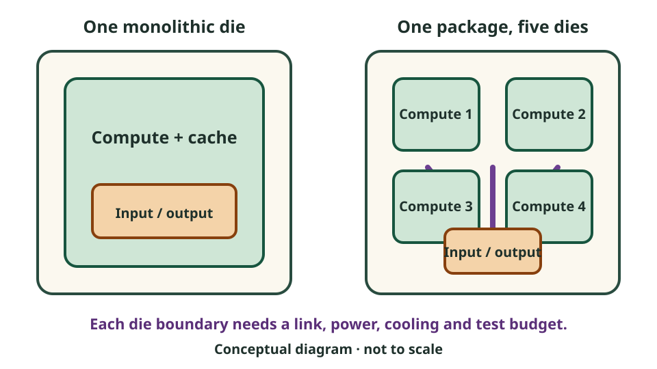

Frontier technology · The Horizon
Why split a processor into chiplets?
Use a package boundary as a design decision: it can unlock reuse and manufacturing choices, but it also creates a link that must be powered, cooled and tested.
1. Make a prediction
One 16-core processor keeps every major block on one large die. Another uses four identical four-core compute dies beside a separate input/output die. Which layout makes an eight-core sibling easier to assemble without redesigning every block?
Reveal the prediction
The modular layout can reuse two of its four-core compute dies and the input/output design. That is a reuse advantage, not proof of lower cost or higher performance.

2. Build the mental model
Monolithic die
Major functions share one piece of silicon. Nearby blocks can communicate over on-die wires, but the whole design shares one die size and process plan.
Chiplet package
Functions are partitioned across dies inside one package. Designers may repeat blocks or choose different processes, while the package and links become part of the system design.
3. Follow the tradeoff
| Possible gain | New question |
|---|---|
| Reuse one compute tile across products | Does the link carry enough data with acceptable latency and power? |
| Use a suitable manufacturing process for each function | Can the dies, package and supply chain be integrated and tested together? |
| Combine more silicon area than one reticle-limited die | Can the package deliver power and remove heat across the full assembly? |
UCIe defines an open package-level die-to-die interconnect stack. A common link is useful infrastructure, but it does not by itself make arbitrary functions, power plans, firmware or thermal designs compatible.
4. Work the Nova example
“Nova” is an invented product family. Its 16-core member uses four identical four-core compute chiplets and one input/output chiplet. Its eight-core member reuses two compute chiplets and the same input/output design.
- What was reused? The compute and input/output designs.
- What changed? The number of compute chiplets and the package configuration.
- What remains unknown? Yield, package cost, link performance, total power, cooling and system test results.
5. Try a boundary budget
Pick one block—compute, memory, graphics or input/output—and write one sentence in each row.
| Reason to split | Does it repeat, scale independently or suit another process? |
|---|---|
| Traffic to cross | What bandwidth, latency and power budget does the link need? |
| Integration proof | What package, thermal, firmware and test evidence would you require? |
Quick check: does a standard link guarantee any two chiplets work together?
No. The link standard covers important connection layers, while a product still needs compatible functions, packaging, power, thermals, firmware, security and compliance testing.
6. Keep the limit visible
This guide explains a partitioning tradeoff, not a universal recipe. Chiplets do not automatically make a processor faster or cheaper. The best boundary depends on workload, process technology, package capability, expected volume and measured system behavior.